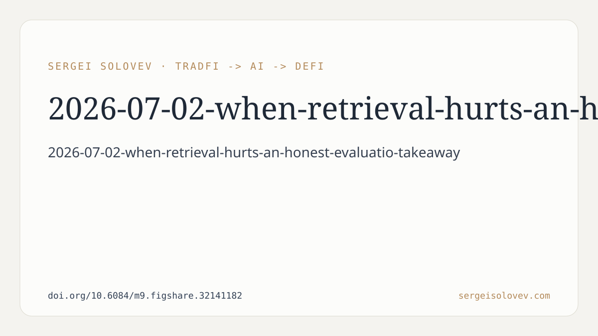

This post discusses the findings from our recent preprint, "When Retrieval Hurts: An Honest Evaluation of RAG for Solidity Vulnerability Detection," published on April 21, 2026. This work investigates the efficacy of Retrieval-Augmented Generation (RAG) for identifying multi-label vulnerabilities within Ethereum Solidity smart contracts, a domain where precise and reliable detection is critical.
Our investigation involved constructing a hybrid pipeline designed for vulnerability detection. This pipeline integrated several components: an initial regex-based heuristic pre-screening layer, a dense retrieval mechanism operating over a labeled knowledge base (KB), and a two-stage Large Language Model (LLM) classifier (composed of a 'judge' LLM and a 'verify' LLM). We assessed three distinct configurations of this pipeline: a heuristic-only approach, an LLM-only approach, and an LLM+RAG approach. These configurations were benchmarked against the SolidiFI benchmark, specifically addressing six predefined vulnerability classes.
A core aspect of our methodology involved demonstrating the influence of sample size on reported performance metrics. On a smaller evaluation set containing 100 samples, our RAG configuration appeared to enhance Macro-F1 scores by +2.0% compared to the plain LLM configuration. This observed improvement is consistent with performance gains frequently reported in the literature concerning RAG applications.
However, when we expanded our evaluation to a more substantial and robust set of 250 samples, the same RAG configuration exhibited a different outcome. On this larger dataset, the LLM+RAG configuration led to a degradation in Macro-F1 performance, specifically by -2.7% relative to the LLM-only baseline. This shift in performance with increased sample size highlights a critical methodological consideration for evaluating such systems.
Beyond the RAG investigation, our work also involved careful tuning of heuristics and extensive prompt engineering. These efforts, applied to the heuristic-only baseline, resulted in statistically stable improvements, yielding a +15% increase in F1 scores over the initial heuristic-only configuration. This indicates that traditional engineering efforts in rule-based systems and LLM prompting can provide measurable and consistent benefits.
The primary finding from this research is that, in its current 'naive' implementation, Retrieval-Augmented Generation (RAG) does not provide a measurable benefit for multi-label Solidity vulnerability detection and, indeed, can actively degrade performance. The term "naive RAG" in this context refers to approaches employing generic embeddings for retrieval and whole-contract chunking for content segregation.
Specifically, the observed decline in Macro-F1 performance on the larger, more representative dataset is a direct and unambiguous indication that the retrieval component, when implemented without domain-specific adaptation, introduced more noise or irrelevant information than it did useful context. This outcome stands in contrast to the initial, seemingly positive, result obtained from a smaller evaluation set, underscoring the potential for misleading conclusions drawn from insufficient data.
For developers and researchers considering RAG for similar domain-specific security tasks, this work suggests a necessity for caution. Simply integrating a retrieval component with off-the-shelf embeddings and chunking strategies is unlikely to yield beneficial results. The premise that more external information is always better, even if not highly relevant or precisely targeted, is challenged by our findings in this specific application. The 'signal-to-noise' ratio of the retrieved information proved to be detrimental when not properly managed.
This work does **not** prove that RAG is inherently useless for vulnerability detection or other sophisticated technical analysis tasks. It does not negate the foundational concept of retrieving relevant information to enhance LLM capabilities. Rather, it points to limitations of generic RAG implementations. We did not, for instance, evaluate RAG with fine-tuned embeddings specifically trained on Solidity vulnerability data, nor did we test retrieval mechanisms that incorporate structural knowledge of smart contracts. The findings are specific to the "naive RAG" configuration outlined.
The significance of this result, particularly its negative aspect on a more robust evaluation, lies in its contribution to realistic expectations for RAG deployment in specialized domains. The initial positive, but ultimately unsubstantiated, gain on a smaller dataset exemplifies a common pitfall in evaluating AI-driven systems. By demonstrating that a larger sample size can flip an apparent positive to a confirmed negative, we emphasize the importance of rigorous, well-sampled evaluation in applied AI research.
Such negative results are crucial. They prevent the propagation of ineffective techniques and guide future research toward more promising directions. In this case, the negative outcome for naive RAG serves as a clear indicator that successful application of retrieval-augmented generation in complex domains like smart contract vulnerability detection likely requires domain-adapted strategies.
Our ongoing work aims to explore these avenues. We specifically outlined several directions for future research that could unlock the promise of retrieval for this domain. These include the development of domain-adapted RAG through fine-tuned embeddings (tailored to Solidity code and vulnerability patterns), the incorporation of cross-encoder re-ranking mechanisms to better filter retrieved documents, and the implementation of Abstract Syntax Tree (AST)-aware chunking strategies that respect the structural semantics of smart contracts rather than treating them as monolithic text blocks.
In summary, while RAG holds considerable promise, its deployment in critical applications like vulnerability detection requires careful, domain-specific engineering. Generic approaches, while superficially appealing, can inadvertently introduce detrimental effects. Our findings advocate for a meticulous, evidence-based approach to RAG implementation, particularly in contexts where accuracy and reliability are paramount.
Full preprint: https://doi.org/10.6084/m9.figshare.32141182